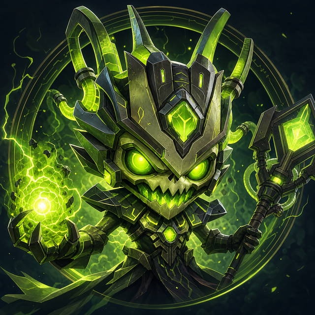

Telegram group character
Pugna
A character with a voice of his own, dropped into a group chat: banter that lands, a daily summary of the room, pictures on request, and Hebrew wit.
FIG. 05

Pugna
Group-chat character · Telegram · Active
- Role
- Group-chat character with a persona of his own
- Channel
- Telegram
- Voice
- Character-first · Hebrew wit
- Routine
- A daily summary of the group
- Extras
- Image generation on request
- The line
- Playful in the room; private work stays private
- Status
- Active
Fig. 05b — standing capabilities
What he does in a room
He can hold a room without turning into an admin panel.
What he is
Group-safe chaos
Pugna is the chat-room chaos project: a character-flavoured agent built for groups — banter, light help, and a distinct voice that survives contact with a busy room.
NoteA character, not an interface. He is the only entry here with a temper.
He has a separate persona, a group-safe operating style, and a clear line between playful conversation and private operational work. He can show up in a room without turning it into a project admin panel.
The daily read
Once a day, the room reads itself back
Every day he posts a summary of the group: what was decided, what was argued about, and what somebody promised to do and has not done yet. It is the one thing he posts that is not a joke.
Ask him for a picture and he will generate one. The wit is Hebrew, the timing is his, and the register moves with the room — which is the whole point of building a character instead of a command list.
Boundaries
Banter, calibrated
The result is an agent that feels like a character people can actually talk to, while still respecting boundaries and not leaking behind-the-scenes machinery. Operational work does not walk into the group, and the group does not walk out of it.
Cross-reference→ Chapter II, 03. The machinery he does not leak.
He is maintained the way the rest of the fleet is: Bob patches him when something underneath stops working, and otherwise stays out of the conversation.